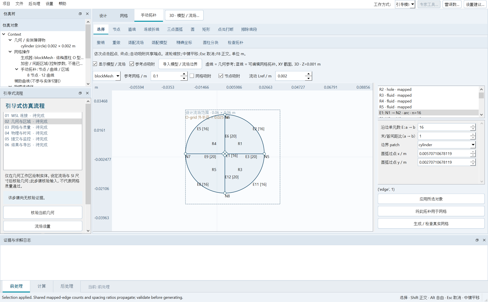
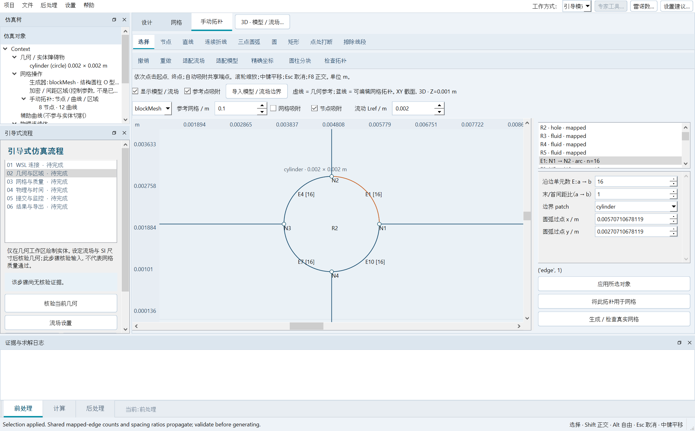

1. 在实际模型与流场里划分手动网格
前处理 → 手动拓扑。默认显示模型轮廓、设计流场尺寸和加密参考区。灰/棕/紫虚线是几何参考；蓝色曲线与编号节点/区域是可编辑拓扑。参考不会静默生成或改变网格。
- “适配流场”查看全域；“适配模型”放大实际实体。保留滚轮缩放、中键平移，标尺和坐标单位为米。
- “导入模型 / 流场边界”明确复制 xmin/xmax/ymin/ymax 定义的矩形流场和实体边界为可编辑闭环。实体为排除区；含孔流体面默认使用 Gmsh。它修改手动拓扑，保留原自动几何。
- 圆形外流场使用“圆柱分块”：读取当前圆柱中心、直径、outer_radius、径向/周向数和间距比，不再固定用 1 m 圆柱。替换已有拓扑需明确选择，可撤销恢复。
- 打断边界、连接共享节点，选择闭合区域指派映射/三角形/四边形网格与单调间距比。应用 → 将此拓扑用于网格 → 生成/检查真实网格。核对真实 checkMesh；拓扑检查不等于网格质量通过。
XY 是可编辑截面；二维使用 empty 层，三维按 depth 和展向层数拉伸。参考点吸附面向实体顶点/圆四个象限点，已有拓扑节点优先。尚不属于任意三维 CAD 体网格。


2. 引导留在同一个主工作区
设置 → 引导模式。引导位于仿真树下方独立停靠栏，不再与属性页竞争选项卡。选择六个步骤仅更新说明，保留画布、视角和未完成直线。WSL、流场、网格、物理设置在主窗口属性栏内打开，应用修改真实输入。打开结果、查看已提交算例属于明确的导航动作；保留可选专家完整窗口。
两侧停靠栏仍可拖动，“重置布局”恢复默认。小屏可滚动引导，工作方式保留。四个引导设置入口不会创建新的顶层设置窗口。
3. 本版真实验收
两阶段界面工程验收：参考显示/导入/重复导入/撤销与六步引导/四个内嵌设置入口；随后检查偏心缩放圆柱分块及三种多边形实体排除区。同时检查键盘鼠标、原生截图及真实字典/结果入口回归。本版重新完成三组新三维四进程计算；界面修复后用本版已完成算例重新验收导出，没有重复求解。
| Case | Model | Mesh | Cells | Ranks | t / s | Frames | Max Co | Max skew | Max nonorth / ° |
|---|
| OFF_BINDING_R1_20260928_131735 | laminar | Structured cylinder O-grid | 5120 | 4 | 0.04 | 5 | 0.01636293594 | 0.0132284624 | 1.478779333e-06 |
| OFF_BINDING_R2_20260928_131735 | laminar | Manual topology (Gmsh) | 5120 | 4 | 0.06 | 4 | 0.01000421587 | 0.2738817701 | 17.37354128 |
| OFF_BINDING_R3_20260928_131735 | kOmegaSST | Structured cylinder O-grid | 5120 | 4 | 0.1 | 6 | 0.01636283995 | 0.0132284624 | 1.478779333e-06 |
UI evidence · Solver / real export-button evidence · Independent rank/time/MAT audit · Regression tests
短时算例验证软件集成，不代表物理网格/时间收敛或湍流力已验证。任意导入曲线/含孔网格仍须检查质量；任意 CAD 及真实远程超算执行未完成验收。历史报告保留原范围。HTML 结构/本地资源已检查，原生截图已目视检查；浏览器渲染验收不可用。